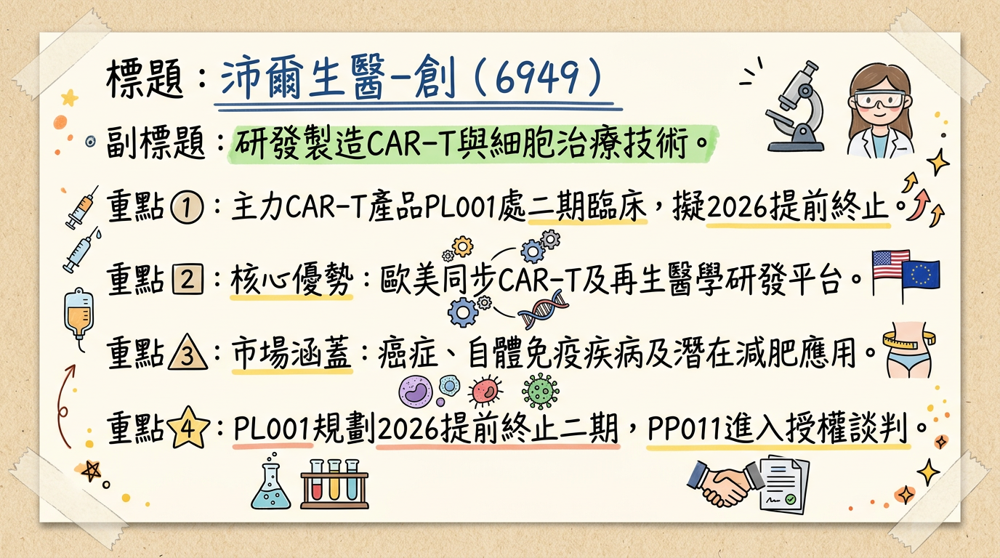
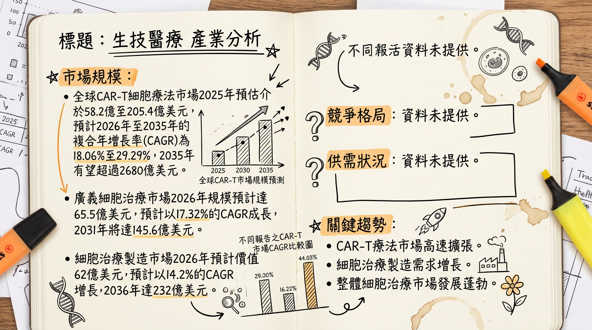
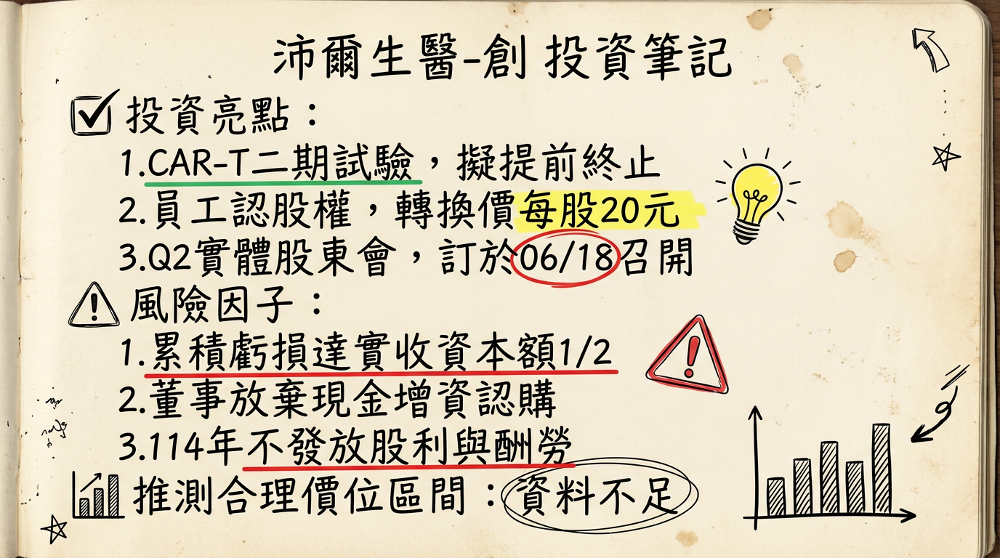

沛爾生醫-創正值關鍵轉型期，儘管2025年仍處於虧損狀態（EPS -7.23元，累積虧損達實收資本額二分之一），但公司多項CAR-T及新型胜肽產品線具備領先技術與臨床進度。隨著竹北PIC/S GMP廠預計於2026年第一季啟動商業化生產，新型胜肽PP011預計於2026年第三季進入一期臨床，以及PL001 CAR-T提前終止二期試驗的加速上市潛力，公司營運有望逐步從純研發轉向商業化，為未來營收帶來顯著成長動能。然而，其仍面臨高昂的研發成本、激烈的市場競爭與不確定的授權談判進度等挑戰。
沛爾生醫-創（6949）主要從事「嵌合抗原受體T細胞（CAR-T）」相關服務及產品的研發、開發與製造，以及特管辦法細胞產品。公司致力於開發與推動與歐美同步的免疫細胞治療及幹細胞再生醫學治療技術。
根據2026年1月27日的報導，細胞製品佔營收比重高達98%。
| 業務類別 | 佔營收比重 (約) | 備註 |
|---|---|---|
| 細胞製品 (CAR-T, 特管辦法) | 98% | 主要營收來源 |
| 其他 | 2% | 包含因子公司對新客戶委任規劃廠房設計收入等 |
* PL001臨床療效優異： 法說會指出，PL001的臨床數據令人振奮，超過60%的病患腫瘤完全消失，其中最長追蹤達四年，其療效優於諾華現有產品Kymriah (約50%)。
* 新型慢病毒製造技術： 擁有專利的新型慢病毒製造技術，有效降低製造成本並解決全球關鍵原料供應瓶頸。
* 7日高Tscm（幹細胞樣記憶T細胞）製程與多鏈CAR技術： 提升CAR-T細胞的製造效率與潛在療效。
* 除了CAR-T治療血液癌，PL002佈局實體瘤（卵巢癌），符合產業擴展趨勢。
* 新型胜肽PP011不僅針對類風濕性關節炎，更發現減肥市場潛力，有望大幅擴展市場應用範圍。
* 未來開發重心轉向異體產品，具備「現成」產品的成本與生產優勢。
* 竹北生醫園區的PIC/S GMP廠面積達1,000坪，CAR-T產能規劃為每年300例，預計2026年第一季開始商業化生產，並預留200坪空間專門投入慢病毒製造，預計2026年產出GMP等級慢病毒，確保關鍵原料自主供應。
| 月份 | 金額 (新台幣千元) | 月增率 (MoM) | 年增率 (YoY) |
|---|---|---|---|
| 2026年1月 | 1,979 | -14.55% | -78.35% |
| 2025年12月 | 2,320 | 36.88% | 26.35% |
| 2025年11月 | 1,690 | -21.45% | 7.98% |
| 2025年10月 | 2,154 | 14.09% | 53.53% |
| 2025年9月 | 1,890 | -23.06% | 8.38% |
| 2025年8月 | 2,450 | -24.63% | 63.38% |
| 會計區間 | 季營收 (新台幣千元) | 毛利率 (%) | 營業利益率 (%) | EPS (新台幣元) | 備註 |
|---|---|---|---|---|---|
| 2025年第四季 | 6,164 | 未提供 | 未提供 | N/A | 季營收為10-12月營收加總，其他數據未提供 |
| 2025年第三季 | 未提供 | -88.26% | -1662.02% | -4.65 | |
| 2025年第二季 | 5,870 | 未提供 | 未提供 | -1.33 |
| 年度 | 總營收 (新台幣千元) | EPS (新台幣元) | 備註 |
|---|---|---|---|
| 22024年 | 20,000 | -6.83 | |
| 2025年 | 31,424 | -7.23 | 虧損較2024年擴大，累積虧損達實收資本額二分之一 |
* 規劃於2027年依再生醫療雙法申請藥證並直接販售。
* 臨床數據令人振奮，超過60%的病患腫瘤完全消失，優於諾華現有產品 (約50%)。
* 已發現其減肥功效，授權談判正在與藥廠進行中。
* 公司未來的開發重心將轉向異體產品，不再推動新的自體產品。
* 廠房已於2025年第三季完成驗證確效，2025年第四季完成CAR-T區域的GMP藥廠認證查核，並預計於2026年第一季開始生產商業化CAR-T產品。
* 已預留約200坪空間專門投入慢病毒製造，預計最快於2026年開始產出GMP等級的慢病毒。
* 公司正在考慮將技術轉移至第三地設廠，以應對潛在的台灣出口高關稅問題。
* 管理層未提及具體資本支出金額與下季/下半年營收/EPS guidance。
沛爾生醫-創2025年全年財務報告顯示，公司仍處於研發與初期投資階段，毛利率及營益率為負值，虧損持續。
| 年度/季度 | 營業收入 (千元) | 營業毛損 (千元) | 營業毛利率 (%) | 營業利益 (千元) | 營業利益率 (%) | 稅前淨利 (千元) | 歸屬母公司淨利 (千元) | 基本每股盈餘 (元) |
|---|---|---|---|---|---|---|---|---|
| 22024年全年 | 20,000 | 未提供 | 未提供 | 未提供 | 未提供 | 未提供 | 未提供 | -6.83 |
| 2025年全年 | 31,424 | (4,391) | -13.97% | (467,350) | -1487.16% | (452,672) | (423,938) | -7.23 |
| 2025年第四季 | 6,164 | 未提供 | 未提供 | 未提供 | 未提供 | 未提供 | 未提供 | N/A |
| 2025年第三季 | 未提供 | 未提供 | -88.26% | 未提供 | -1662.02% | 未提供 | 未提供 | -4.65 |
| 2025年第二季 | 5,870 | 未提供 | 未提供 | 未提供 | 未提供 | -83,404 | -77,803 | -1.33 |
* 2026年3月4日，董事會訂定115年3月4日為員工認股權憑證轉換普通股之增資基準日，發行價格每股新台幣20元，發行股數115,000股。
CAR-T細胞療法市場預計將在未來幾年呈現顯著增長，儘管不同報告預估值有所差異，但皆指向高速成長：
| 市場類別 | 2025年市場規模 (估計) | 2026年市場規模 (估計) | 2026-2033/2035 CAGR | 2033/2035年市場規模 (估計) |
|---|---|---|---|---|
| CAR-T細胞療法 (報告一) | 58.2億美元 | 69.9億美元 | 18.06% (至2033年) | 223.6億美元 |
| CAR-T細胞療法 (報告二) | 205.4億美元 | 未提供 | 29.29% (至2035年) | 2680億美元 |
| CAR-T細胞療法 (報告三) | 89.5億美元 | 109.2億美元 | 7.34% (至2034年) | 192.5億美元 |
| 細胞治療製造市場 | 未提供 | 62億美元 | 14.2% (至2036年) | 232億美元 (2036年) |
| 廣義細胞治療市場 | 65.5億美元 | 未提供 | 17.32% (至2031年) | 145.6億美元 (2031年) |
| 公司名稱 | 成立年份 | 總部 | 公司規模（員工） | 主要產品或服務 |
|---|---|---|---|---|
| Gilead Sciences (Kite Pharma) | 1987 | 美國加州 | 10,001+ | Yescarta®, Tecartus® (CAR-T療法) |
| Bristol Myers Squibb | 1887 | 美國新澤西州 | 10,001+ | Breyanzi® (CAR-T療法) |
| Novartis AG | 1996 | 瑞士巴塞爾 | 10,001+ | Kymriah® (CAR-T療法) |
| Janssen (Johnson & Johnson) | 1968 | 加拿大安大略省 | 5,001-10,000 | Carvykti® (CAR-T療法，與Legend Biotech合作) |
| JW Therapeutics | 2016 | 中國上海 | 51-200 | (專注於CAR-T療法開發) |
| 比較項目 | 沛爾生醫-創 (6949) | 主要競爭對手 (已商業化大廠) |
|---|---|---|
| 技術 | PL001 (CD19 CAR-T)： 二期臨床，療效>60%，優於諾華Kymriah (約50%)。PL002 (間皮素多鏈CAR-T)： 實體瘤 (卵巢癌)佈局。PP011 (新型胜肽)： 類風濕性關節炎/減肥潛力。慢病毒製造： 自有專利技術，降低成本。異體CAR-T： 未來開發重心。 | Kymriah, Yescarta, Tecartus, Breyanzi, Carvykti： 主要針對CD19/BCMA血液惡性腫瘤。業界趨勢往實體瘤、異體CAR-T、基因編輯、裝甲型CAR-T發展。 |
| 產能 | 竹北PIC/S GMP廠： CAR-T產能每年300例，2026年Q1商業化生產。慢病毒製造2026年產出。 | 大型藥廠擁有大規模製造設施，或大量委外CDMO。Kite Pharma計畫2026年前產能增四倍。Allogene目標年產3萬-6萬劑以上。 |
| 客戶 | 目標客群多元化： B細胞淋巴癌、卵巢癌、類風濕性關節炎、潛在減肥市場。 | 主要服務血液惡性腫瘤患者，積極擴展至實體瘤及自體免疫疾病。 |
| 價格 | 產品處於臨床試驗階段，無公開定價。 | 已上市CAR-T產品價格高昂，單劑量超過35萬美元。降低生產成本是重要目標。 |
很抱歉，在可用的資料中，未能找到沛爾生醫-創（6949）及其台灣同業（細胞治療領域）在2024-2026年間的最新營收規模、毛利率及EPS的具體比較數據。台灣細胞治療公司多數仍處於研發或早期商業化階段，財務數據透明度及可比性有限。
* 趨勢： CAR-T療法在血液癌表現出色，但在實體瘤中受限於免疫抑制性腫瘤微環境(TME)。研究正積極開發「裝甲型」CAR-T細胞以克服TME障礙。
* 具體影響： 將CAR-T療法應用擴展至卵巢癌等難治實體瘤，顯著擴大市場潛力。
* 對沛爾生醫-創： PL002針對卵巢癌的間皮素多鏈CAR-T開發，與此全球趨勢高度契合，若成功將佔據重要地位。
* 趨勢： 自體CAR-T療法存在製造時間長、成本高、難規模化等限制。異體CAR-T利用健康捐贈者細胞，可提供更快速、成本效益更高、可擴展的「現成」治療。預計到2031年異體產品複合年增長率將達15.22%。
* 具體影響： 大幅提高患者可及性，縮短治療等待時間，降低成本。
* 對沛爾生醫-創： 公司未來開發重心轉向異體產品，符合此一產業長期發展方向，有助於提升競爭力與市場份額。
* 趨勢： AI正加速藥物發現、開發、臨床試驗數據分析及監管審查，可壓縮30-40%的發現時程，並縮短臨床前開發時間至13-18個月。
* 具體影響： 顯著提高研發效率，縮短上市時間，降低成本，並優化臨床試驗設計。
* 對沛爾生醫-創： 可藉助AI工具加速新型CAR-T靶點識別、CAR結構優化、臨床結果預測及製造流程優化，加速產品開發進程。
| 時間點 | 成長動能類型 | 具體事件 | 相關產品/技術 |
|---|---|---|---|
| 2025年第四季 | 產品進度 | PL001二期臨床試驗完成最後一名病患收案。竹北IC/S GMP CAR-T區域完成GMP藥廠認證查核。 | PL001 |
| 2026年第一季 | 產能/商業化 | 竹北IC/S GMP廠開始生產商業化CAR-T產品。 | PL001 |
| 2026年上半年 | 產品進度 | 新型胜肽產品PP011預計申請進入人體臨床試驗。 | PP011 |
| 2026年第三季 | 產品進度 | 新型胜肽產品PP011預計啟動第一期臨床試驗。沛爾轉投資TCMC細胞工廠預計完成驗證。 | PP011 |
| 2026年下半年 | 產品進度 | BCMA CAR-T (PL003) 預計申請人體臨床試驗。 | PL003 |
| 2026年 | 產能/技術 | 竹北廠預計開始產出GMP等級的慢病毒。 | 慢病毒技術 |
| 2027年 | 產品進度 | PL001依再生醫療雙法申請藥證並直接販售。間皮素多鏈CAR-T (PL002) 預計申請進入人體臨床試驗。BCMA CAR-T (PL003) 預計正式啟動第一期臨床試驗。 | PL001, PL002, PL003 |
| 2028年 | 產品進度 | 間皮素多鏈CAR-T (PL002) 預計啟動一/二期試驗。 | PL002 |
沛爾生醫-創（6949）正處於由研發導向轉型為商業化營運的關鍵時期，2026年將有多項重要里程碑有望兌現，為公司未來成長注入強勁動能，但同時也需面對新藥開發的固有風險與財務挑戰。
本報告由 AI 自動產生，資料來源為公開網路資訊，僅供參考，不構成投資建議。產生時間：2026-03-06 13:00


